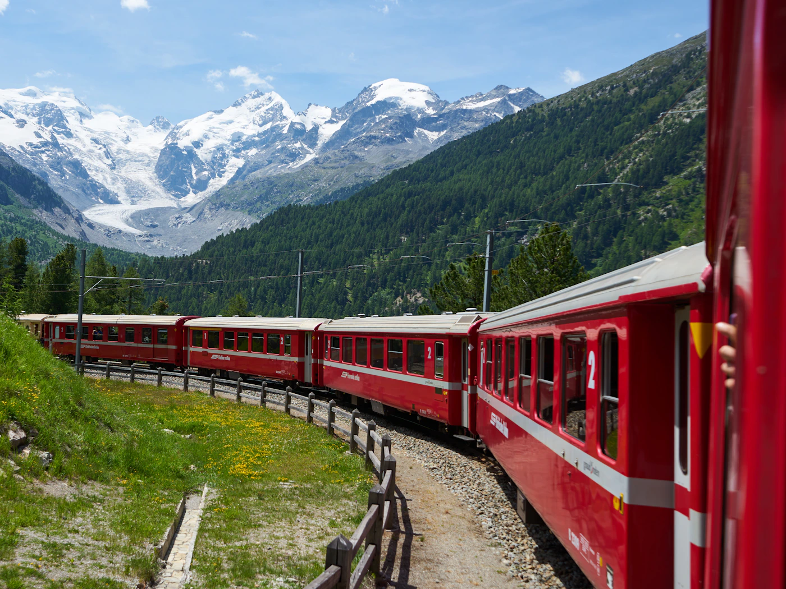
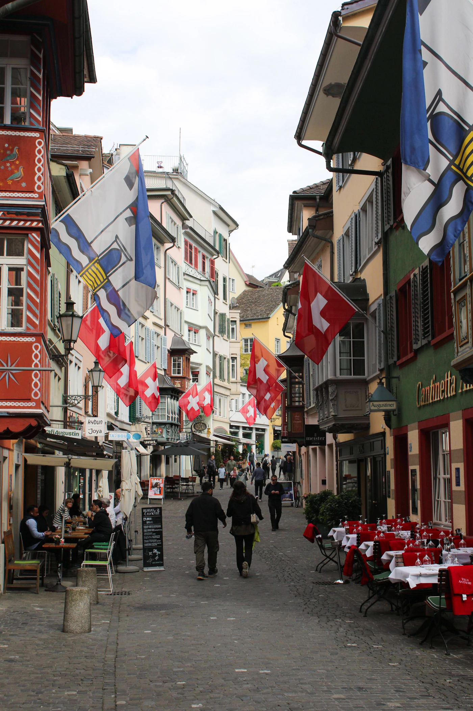

Eine Entscheidung treffen
Ein Ausbildungsplatz im Ausland eröffnet eine Möglichkeit. Kosten, Familie und die eigenen Ziele beeinflussen, ob jemand sie nutzt.
Was müsste für dich stimmen, damit du gehen würdest?
Migration verstehen
Manche gehen für einen Job, andere suchen Schutz. Was Migration bedeutet und wie sie die Schweiz verändert.
Trendreport 2026 und Interview entdecken
Migration heisst, den Lebensmittelpunkt zu verlegen. Das kann ein Umzug innerhalb eines Landes sein oder der Beginn eines Lebens im Ausland.
Begriffe nachschlagenMenschen lebten 2024 ausserhalb ihres Herkunftslandes.
Wähle ein Bild. Du siehst, was Menschen zum Weggehen drängt und was sie an einem anderen Ort suchen.
Krieg oder Verfolgung können Menschen zur Flucht zwingen. Sie suchen einen Ort, an dem sie sicher leben können.
Beispiel: Eine Journalistin wird wegen ihrer Arbeit bedroht und sucht im Ausland Schutz.
Sicherheit und FreiheitKrieg, Verfolgung, fehlende Rechte
Sicherheit, Freiheit, Schutz der Familie
Auch Familie und Ausbildung sind Gründe für Migration. Die Fotos sind Symbolbilder, die Beispiele erfunden.
Ein erfundenes Beispiel: Jemand zieht für eine Ausbildung ins Ausland. Beim Scrollen siehst du, was sich auf diesem Weg verändert.

Ein Ausbildungsplatz im Ausland eröffnet eine Möglichkeit. Kosten, Familie und die eigenen Ziele beeinflussen, ob jemand sie nutzt.
Was müsste für dich stimmen, damit du gehen würdest?
Zulassung, Wohnraum und nötige Papiere müssen geklärt werden. Je nach Staatsangehörigkeit gelten unterschiedliche Einreise- und Aufenthaltsregeln.
Welche Unterstützung würde den Anfang erleichtern?
Sprache lernen, Kontakte knüpfen und sich in der Ausbildung zurechtfinden braucht Zeit. Verbindungen zur Familie und zum Herkunftsort können bleiben.
Ab wann fühlt sich ein neuer Ort für dich vertraut an?
Wer geht, verändert etwas an beiden Orten. Wähle eine Perspektive und vergleiche die Folgen.
Faire Arbeitsbedingungen und gut geplante Schulen, Wohnungen und Verkehrswege helfen, Belastungen zu verringern.
Die Schweiz war lange ein Auswanderungsland. Mit der Industrialisierung wurde sie zunehmend zu einem Einwanderungsland.
Armut, knappe Erwerbsmöglichkeiten und Krisen bewegen Schweizerinnen und Schweizer zur Auswanderung. Viele ziehen in andere europäische Länder oder nach Nord- und Südamerika.
Der Perspektivenwechsel: Menschen aus der Schweiz suchen im Ausland das, was später viele Menschen in der Schweiz suchen. eine Existenz und eine Zukunft.
Weitere Fluchtbewegungen: Nach dem Zweiten Weltkrieg finden auch Menschen aus Ungarn (1956), Tibet (ab 1963) sowie Vietnam und Kambodscha (besonders 1979 bis 1982) in der Schweiz Schutz. Arbeitsmigration und humanitäre Aufnahme sind unterschiedliche, gleichzeitig verlaufende Teile dieser Geschichte.
Historischer Überblick, keine vollständige Chronik. Schweizerisches Bundesarchiv , Migrationsgeschichte Schweiz
Im Quartier, in der Schule oder beim Essen. Migration verändert den Alltag und schafft neue Gewohnheiten.
Mehrsprachige Familien bringen weitere Sprachen in die Schule und ins Quartier. Im Verein und bei der Arbeit lernen Menschen voneinander.
Italienische Restaurants gehören heute vielerorts zum Alltag. Auch Musik und Feste verändern sich durch die Menschen, die hier leben.
Menschen können sich mehreren Orten zugehörig fühlen. Diskriminierung und ungleiche Chancen erschweren das Zusammenleben. Schule, Vereine und faire Regeln können Teilhabe erleichtern.
Der Trendreport Migration Schweiz 2026 beschreibt die jüngste Entwicklung. Hier kannst du seine Zahlen vergleichen und prüfen, was sie aussagen.
Ständige ausländische Wohnbevölkerung nach SEM. Wähle ein Jahr für die Einordnung.
Die Grafik zeigt den Saldo der ständigen ausländischen Wohnbevölkerung nach SEM-Definition. Der Asylbereich wird beim SEM separat ausgewiesen.
Das BFS erfasst im ständigen Bestand auch bestimmte Personen aus dem Asylbereich nach mehr als zwölf Monaten sowie Personen in diplomatischen und internationalen Funktionen. Deshalb sind die Bestände nicht direkt austauschbar. Gemeinsames Faktenblatt von SEM und BFS
Diese Zahl zählt Einwanderungen für einen bestimmten Zweck. Sie ist kein Saldo und lässt sich nicht mit der Nettozuwanderung gleichsetzen.
SEM: ArbeitsmigrationGesuche sind weder die gesamte Zuwanderung noch die Zahl anerkannter Flüchtlinge. 20’300 Gesuche stammten von neu eingereisten Asylsuchenden.
SEM: AsylstatistikDas BFS zählt insgesamt 9’127’100 Menschen. Ein Bestand beschreibt, wie viele Menschen zu einem Zeitpunkt hier leben, keine jährliche Zuwanderung.
BFS: definitive ErgebnisseDer Report nimmt an, dass der Saldo zunächst weiter sinkt und später leicht steigt. Der Wendepunkt wird nicht genauer begründet. Ob diese Entwicklung eintritt, bleibt offen.
Diese Alternativen sind qualitative Überlegungen. Vergleiche sie mit den globalen Szenarien für 2050.
Asyl ist ein Teil der Migration. Eine Zahl zu Asylgesuchen beschreibt weder die gesamte Zuwanderung noch die Zahl anerkannter Flüchtlinge.
Gemäss SEM waren das 449 weniger als im September 2025. Das ist eine Monatsaufnahme, keine Jahresprognose.
Zur Asylstatistik des SEMBei Ausweis F kann eine Wegweisung nicht vollzogen werden, etwa weil eine Rückkehr unzumutbar ist. Betroffene dürfen schweizweit arbeiten; der Stellenantritt ist meldepflichtig. Unsichere Perspektiven können die Integration trotzdem erschweren.
SEM: Ausweis FWie verbinden wir faire Verfahren mit zügigen Entscheiden? Wie gelingen Unterbringung, Spracherwerb und Berufseinstieg? Und welchen Schutz erhalten Menschen aus der Ukraine? Dazu gelten eigene Regeln zum Status S.
SEM: aktuelle Fragen zur UkraineRedaktionell geprüfter Stand, keine laufend aktualisierte Nachrichtenseite. Für spätere Änderungen die verlinkten Originalquellen prüfen.
Das bereitgestellte Interview ergänzt die Statistik um persönliche Erfahrungen. Die befragte Person erzählt von Sprache, Schule und dem Einstieg ins Berufsleben.
Originalton aus dem Video vom 18. November 2026. Dauer: 10:35 Minuten.
Die Wiedergabe startet erst, wenn du Play oder ein Kapitel auswählst.
Was können Schule und Betrieb tun, damit sprachliche Unsicherheit nicht zur Ausgrenzung führt?
Die Person erinnert sich an sprachliche Unsicherheiten und daran, dass andere darüber gelacht hätten. Beim Deutschlernen halfen ihr die Schule, deutschsprachige Kontakte und das Lesen. Grössere durchgehende Mobbingprobleme beschreibt sie auf Nachfrage nicht.
Bezug zum TrendreportSprachförderung wird im Report als Handlungsfeld genannt. Das Interview zeigt eine persönliche Erfahrung dazu, wie Übung und Kontakte das Lernen unterstützen können.
Themenstellen: 00:36 bis 01:32 und 05:12 bis 06:07.
Nach einer abwertenden Reaktion auf ihren Nachnamen sorgte sich die Person auch vor möglichen Vorurteilen bei Bewerbungen. Sie berichtet zugleich, relativ rasch eine Lehrstelle gefunden und die Ausbildung abgeschlossen zu haben. Am Arbeitsplatz habe sie überwiegend gute Erfahrungen gemacht.
Erfahrung und Befürchtung unterscheidenDie Sorge vor Benachteiligung ist Teil der Erzählung. Der geschilderte erfolgreiche Berufseinstieg gehört ebenso dazu. Das Gespräch belegt keine allgemeine Benachteiligungsquote.
Themenstelle: 02:48 bis 04:27.
Die Person nimmt Unterschiede beim Arbeitstempo und beim Umgang mit Fehlern wahr. Gleichzeitig beschreibt sie freundliche Beziehungen zu Mitarbeitenden und keine grösseren Konflikte. Offenheit und Kontaktfreude sieht sie als eigene Stärken.
Eine persönliche PerspektiveSolche Eindrücke erklären, wie jemand den eigenen Alltag erlebt. Daraus lassen sich keine festen Eigenschaften ganzer Länder oder Bevölkerungsgruppen ableiten.
Themenstellen: 06:09 bis 08:01 und 08:02 bis 09:16.
Die Person wünscht sich Geduld und Akzeptanz gegenüber Menschen, die Sprache und Alltag erst kennenlernen. Als persönliche Empfehlungen nennt sie Lesen, häufiges Sprechen, Kontakte und Sprachkurse oder Übungsangebote.
Bezug zur MenschenwürdeRespekt zeigt sich auch darin, wie wir mit Fehlern, Namen und Unsicherheit umgehen. Teilhabe braucht eigene Lernmöglichkeiten und ein Umfeld, das sie zulässt.
Themenstelle: 08:02 bis 10:06. Halte deine Überlegungen im Portfolio fest.
Ein Einzelinterview macht persönliche Erfahrungen sichtbar. Es zeigt nicht, wie häufig diese Erfahrungen vorkommen. Familienbezüge und Zukunftsaussichten werden als Motive genannt; ein Asyl- oder Schutzstatus lässt sich daraus nicht ableiten.
Grundlage ist das bereitgestellte WhatsApp-Video vom 18. November 2026 mit 10:35 Minuten Laufzeit. Die Zusammenfassungen beruhen auf einer automatischen Transkription und sind keine wörtlichen Zitate. Einzelne Fragen enthalten bereits Deutungen; hier werden die Antworten sinngemäss wiedergegeben.
Menschenwürde gilt für alle, unabhängig vom Aufenthaltsstatus. Integrität bedeutet, körperlich und psychisch unversehrt zu bleiben.
Das Recht, ein Land zu verlassen, und das Recht, vor Verfolgung Asyl zu suchen, sind in der Allgemeinen Erklärung der Menschenrechte verankert. Daraus folgt kein allgemeines Recht auf Einreise in jedes beliebige Land.
Menschenrechte, Artikel 13 & 14Öffne einen Fall und prüfe, welche Rechte gefährdet sind. Die Beispiele sind erfunden.
Eine Familie muss eine gefährliche Route nutzen und gerät in die Abhängigkeit von Schleusern.
Ein Arbeitgeber nutzt die unsichere Situation eines Zugewanderten aus und hält vereinbarten Lohn zurück.
Eine junge Frau wird wegen ihres Namens wiederholt bei der Wohnungssuche abgewiesen.
Was Staaten heute entscheiden, beeinflusst die Migration von morgen. Vergleiche drei mögliche Entwicklungen bis 2050. Es sind Lernszenarien, keine Vorhersagen.
Staaten erweitern legale Wege für Arbeit, Bildung und Schutz. Sie investieren in Integration und vereinbaren faire Regeln für die Anwerbung von Fachkräften.
Annahme: Internationale Kooperation und Investitionen bleiben politisch tragfähig.
Mehr planbare Wege können gefährliche Reisen reduzieren. Arbeitsmigration kann Engpässe abfedern.
Zielländer benötigen Fachkräfte; Herkunftsländer dürfen ihre Gesundheits- und Bildungssysteme nicht schwächen.
Mehr Bildungsabkommen, zugängliche Verfahren und faire Rekrutierungsprogramme.
Klimamigration innerhalb eines Landes. Die Weltbank modelliert in einem pessimistischen Szenario bis zu 216 Millionen klimabedingte Binnenmigrantinnen und Binnenmigranten bis 2050 in sechs Weltregionen. Gemeint sind Bewegungen innerhalb von Ländern, keine Prognose für Zuwanderung nach Europa. Groundswell, 2021
Zum Vergleichen: Welches Szenario erscheint dir unter welchen Bedingungen plausibel? Nenne eine Chance, ein Risiko und einen Hinweis, der deine Einschätzung verändern würde.
Sieben Fragen zu Migration und den neuen Quellen.
Mit einer Erklärung nach jeder Antwort.
Was nimmst du aus dem Thema mit? Halte deine Gedanken fest und beschreibe, wo du in zehn Jahren leben möchtest.
Deine Notizen bleiben in diesem Browser. Mit dem Download sicherst du eine eigene Kopie.
Noch keine Notizen gespeichert.
Ein kleines Begriffslexikon für die nächste Diskussion.
Verlagerung des Lebensmittelpunkts. Binnenmigration findet innerhalb eines Staates statt, internationale Migration über Staatsgrenzen hinweg.
Im Sinn der Genfer Flüchtlingskonvention: eine Person ausserhalb ihres Herkunftslandes mit begründeter Furcht vor Verfolgung aus bestimmten Gründen, etwa Religion oder politischer Überzeugung, die dort keinen Schutz erhält oder beanspruchen kann.
Eine Person, die Schutz beantragt hat und auf einen Entscheid wartet. Ein Asylgesuch ist noch keine Anerkennung als Flüchtling.
Ein Prozess der Teilhabe, etwa an Bildung, Arbeit und gesellschaftlichem Leben. Dazu tragen Zugewanderte, Institutionen und die Aufnahmegesellschaft bei.
Menschen und Gemeinschaften, die ausserhalb eines Herkunftslandes leben und vielfältige Beziehungen zu diesem oder untereinander pflegen.
Grenzübertritt oder Aufenthalt ausserhalb der geltenden migrationsrechtlichen Regeln. Ein irregulärer Status nimmt einem Menschen seine Menschenrechte nicht.
Grundlage ist dein Unterrichtsauftrag. Ergänzungen wurden mit den hier verlinkten Quellen geprüft. Die Szenarien und erfundenen Fallbeispiele sind didaktische Modelle. Der Interviewabschnitt gibt persönliche Erfahrungen aus dem bereitgestellten Gespräch wieder.
Neue Materialien und ihre amtlichen Belege geprüft am 23. November 2026. Übrige Quellen: 4. November 2026.
Die Fotos sind Symbolbilder. Sie zeigen keine dokumentierten Migrationsgeschichten der abgebildeten Personen.
Alpenbahn: Lukas Seitz, UnsplashZürich: Tomek Baginski, UnsplashTrockener Boden: Bernd Dittrich, UnsplashZürcher Altstadt, UnsplashReisende am Bahnhof, Shopify BurstInspiration für die Bildauswahl: 21st.dev, Le ThanhAnimationen mit Motion